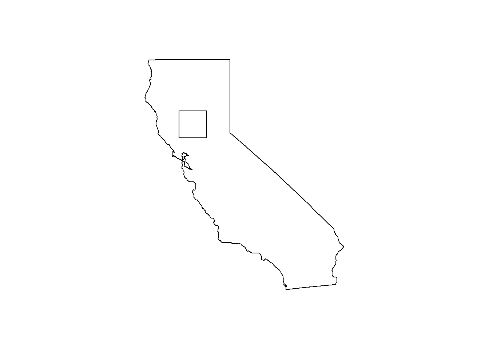
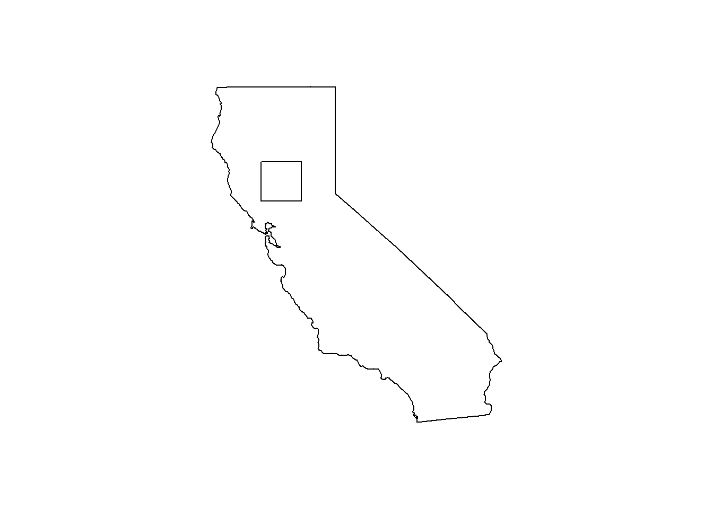
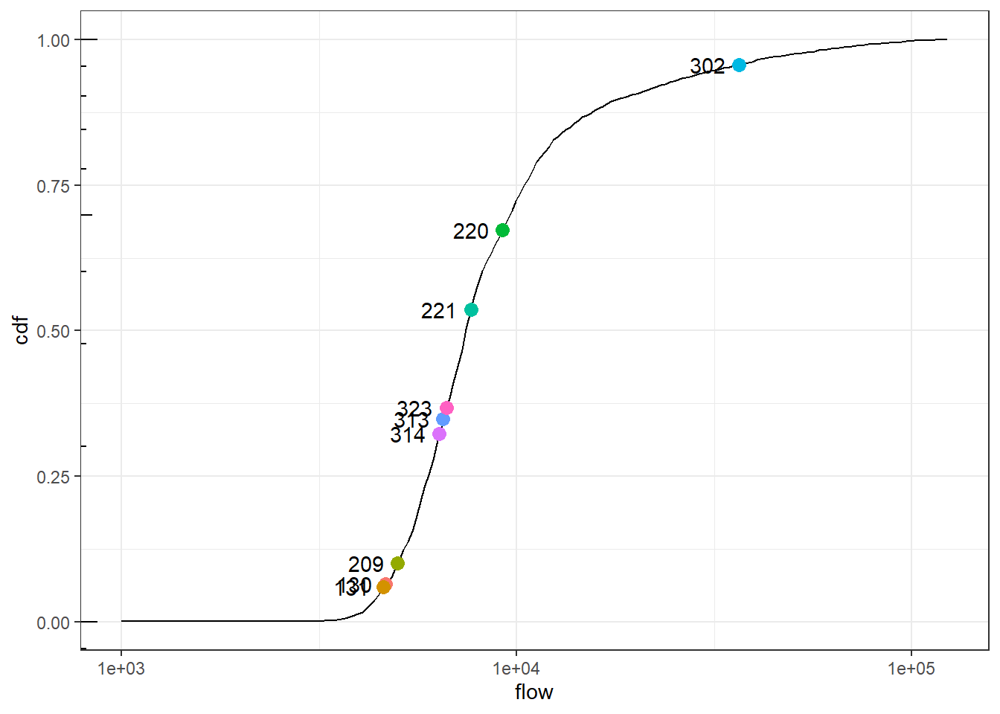

3 Methods
3.1 SWOT satellite overview and observation characteristics
The SWOT satellite will orbit at 890.6 km altitude, with an orbit period of 21 days. This combined with an inclination angle of 77.6° results in adjacent ground tracks having a spacing of 135 km at the equator (Fu et al. 2012). The on-board wide-swath Ka-band radar interferometer converts phase and range information into observations of water surface height and spatial extent. These observations are distributed over two swaths extending between roughly 10 km and 64 km perpendicular to the ground track of the satellite on either side of the track.
3.2 SWOT River Data Products
The SWOT satellite mission will produce and disseminate data products at several scales of spatial aggregation. Here we consider two products of particular interest to river hydrology: the node product and the reach product. Ultimately these are all generated using the on-board wide-swath synthetic-aperature radar interferometer, and several processing steps are performed–and intermeidate products created–prior to geolocation.
3.2.1 Node product
SWOT nodes are spatially fixed points defined at roughly 200m intervals along SWOT-observable river sections (broadly, those with average width > 100m). These nodes are populated with observations for each pass of the SWOT satellite for which the node is in the swath. The node observations are aggregated from a lower-level product, the pixel cloud, based on proximity. Observed variables include node height relative to geoid, average node width, and node area.
3.2.1.1 Pixel to node aggregation
The node-level measurements are aggregated from pixel measurements depending on the variable. Pixel measurements include height relative to geoid, latitude/longitude, pixel area, and water fraction–all with corresponding 1-\(\sigma\) uncertainty estimates. Additionally, the pixels contain a classification with values including “land”, “land near water”, “water near land”, and “interior water”. These classifications do not necessarily reflect the esitmated water fraction and are based on edge detection after the water mask is regularized from a noisy reflectance image and segmented into distinct features.
Node heights are computed as the mean of interior water pixel heights, weighted by inverse height variance (squared uncertainty estimate). Node area is computed in one of 3 ways–“simple”, “water fraction”, and “composite”. In the simple method, node area is computed as the sum of pixel area for “interior water” and “water near land” pixels. In the “water fraction” method, the pixel areas of “land near water”, “water near land”, and “interior water” are multiplied by their estimated water fraction and the sum is taken of these pixelwise products. The “composite” method is similar to the “water fraction” method, except “interior water” pixels are not multiplied by their estimated water fraction (it is assumed the water fraction is 1). Node width is computed as the dividend of node area and node length, where the latter is a fixed constant corresponding to the node spacing along the river.
3.2.1.2 Node-level uncertainty estimates
Uncertainty estimates–representing one standard deviation of random error–are provided alongside the observations, based on theoretical relationships with radar coherence, estimated reflectance of land and water, and pixel classification. At the node level, these are computed from related estimates in the pixel cloud.
Water fraction uncertainty is computed using the assumption that coherent radar power is a gamma-distributed random variable with shape parameter, \(k\), equal to \(N_l\), the number of independent radar looks per pixel, and scale parameter, \(\theta\), related to water fraction, \(\alpha\), as follows:
\[ \theta = \frac{\alpha \mu_w + (1 - \alpha) \mu_l}{k} \]
where \(\mu_w\) and \(\mu_l\) are the expected (mean) coherent power from water and land pixels, respectively. Using Bayes’ rule with an uninformative scale-invariant prior on \(\theta\) results in a posterior distribution for \(\theta\) that is inverse-Gamma with shape and scale parameters \(k = N_l\) and \(\theta = 1 / p\), where \(p\) is the measured coherent power. This leads to a posterior variance for \(\alpha\) given by:
\[ \sigma^2_{\alpha} = \frac{N_l^2 x^2}{(\mu_w - \mu_l)^2(N_l - 1)^2(N_l - 2)} \]
Water fraction uncertainty is the largest component of pixel area uncertainty (except the simple aggregation method), but other contributions from pixel assignment, pixel area are calculated depending on the aggregation method.
3.2.2 Reach-level product
The reach data product is created by aggregating over a set of nodes within a reach. SWOT reaches are defined to span roughly 10-km segments of SWOT-observable rivers, containing a fixed number of nodes. However, since not all nodes may be observed for a given pass of the satellite, a reach observations may be computed from a subset of the nodes they contain.
Reach area is calculated as the sum of node areas; reach width is calculated as reach area divided by the total node length. Since nodes are equally spaced within a reach, reach width is equivalent to the mean node width in the reach.
Reach height and slope are computed by fitting a weighted linear model to the node height and along-reach distance data, weighted by inverse variance of the individual node heights. Reach slope is then the slope coefficient of this model, and reach height is the linear-model prediction for height at the midpoint of the reach. This method of height aggregation allows for different passes’ height observations to be directly comparable even if only a portion of the reach is observed for that pass.
Reach observation uncertainty estimates come from straightforward statistical calculations using the different aggregation methods. Assuming node errors to be independent, reach-level width uncertainty (\(\sigma_{rw}\)) and area uncertainty (\(\sigma_{ra}\) estimates are
\[ \sigma_{rw} = \sqrt{\frac{1}{n}\sum_{i=1}^n \sigma_{wi}^2} \]
and
\[ \sigma_{ra} = \sqrt{\sum_{i=1}^n \sigma_{ai}^2} \]
where \(\sigma_{wi}\) and \(\sigma_{ai}\) are the \(i^{th}\) node’s width and area uncertainty estimates, respectively.
Reach-level height (\(\sigma_{rh}\)) and slope \(\sigma_{rs}\) uncertainty come directly from the standard error of the liner model used to estimate them:
\[ \sigma_{rh} = RMSE\sqrt{\frac{1}{n} + \frac{(x^* - \bar{x})^2}{\sum_{i = 1}^n (x_i - \bar{x})^2}} \]
and
\[ \sigma_{rs} = RMSE \sqrt{\frac{1}{\sum_{i = 1}^n (x_i - \bar{x})^2}} \]
where RMSE is the model root mean squared error, \(x_i\) is the along-reach location of node \(i\), \(\bar{x}\) is the mean along-reach location of the observed nodes, and \(x^*\) is the along-reach location of the midpoint of the reach, where height is estimated.
3.3 Simulated Datasets
The study area consists of 734 nodes comprising 10 reaches in the Sacramento River between 38.92 and 39.75 degrees latitude (Figure ####). Simulated SWOT data products were produced using a hydrodynamic model of the river forced by historic observed flow conditions and observed bathymetry. The resulting spatially distributed water-surface elevations were used to produce a simulated single-look complex (SLC) data product using a SLC simulator program producted by Jet Propulsion Laboratory. This simulator mimics various radar phenomena including ####. The simulated SLC products were processed using the SWOT processing chain to create the pixel, node, and reach river products.
 

Validation of the simulated products requires a truth dataset; this was derived from a Global Digital Elevation Map (GDEM) model, produced from the ASTER NASA satellite. The GDEM was used to create a synthetic pixel cloud directly (in this case no precurser SLC was produced) and processed to create truth data for nodes and reaches in the study area. ####
Two sets of SWOT simulations were generated corresponding to more idealized and more realistic conceptions of land/water reflectance contrast and prior elevation information. The idealized case results in observation errors that arise from processes that are explicitly accounted for in the uncertainty estimation, whereas the realistic case includes potential un-modeled sources of error–namely phase unwrapping error and layover error, detailed below. This isolation of modeled and unmodeled error sources allowed for explicit validation of uncertainty models’ representation of modeled phenomena as well as some indication of performance degradation due to unmodeled phenomena.
Phase information from the radar interferometer must be “unwrapped” in order to properly map radar data onto geospatial coordinates, and this requires a reference model of water surface elevation. The idealized case uses the GDEM truth as a reference model, whereas the realistic case uses a coarser-resolution Shuttle Radar Topography Mission (SRTM, ####REF) dataset for reference; SRTM will be used as the reference DEM for the operational SWOT mission. Layover errors arise when nearby land maps onto the same phase-range coordinates as water, resulting in biased heights for the affected water features (pixels, nodes, reaches). Layover was effectively turned off in the idealized simulations by setting land reflectance to be low (-100dB), whereas the realistic case used a higher land reflectance (-5dB). Both cases used a water reflectance of 10dB, and other simulation parameters were held constant across the two cases.
For each of the two simulation sets, 9 simulations were created using 3 passes and 3 cycles forced by observed discharge from February and March 2009 (Table ####). These simulations encompass a range of conditions affecting measurement error, including flow condition, number of pixels per node, and location of the water feature within the swath. Discharge over the simulated days ranged from 4662 to 36610 CFS, corresponding to the 6th and 96th percentiles of flow (Figure ####) as monitored by CA Dept of Water Resources (http://cdec.water.ca.gov/dynamicapp/staMeta?station_id=HMC). The three passes observe the study nodes and reaches across a wide range of positions within the swath, ranging from very near-swath (<10 km) in pass #### to very far swath (>60 km) in pass ####. The number of pixels per node ranged from #### to #### (Figure ####).
| Date | Pass | n. nodes | flow (CFS) | flow pcntl. |
|---|---|---|---|---|
| 2009-01-30 | 249 | 13131 | 4662 | 6.5 |
| 2009-01-31 | 264 | 7473 | 4595 | 5.9 |
| 2009-02-09 | 527 | 13143 | 4999 | 10.0 |
| 2009-02-20 | 249 | 13131 | 9224 | 67.3 |
| 2009-02-21 | 264 | 7473 | 7659 | 53.7 |
| 2009-03-02 | 527 | 13143 | 36610 | 95.7 |
| 2009-03-13 | 249 | 13131 | 6515 | 34.8 |
| 2009-03-14 | 264 | 7473 | 6370 | 32.3 |
| 2009-03-23 | 527 | 13143 | 6639 | 36.7 |

3.4 Error scaling
The different SWOT observations are reported with estimates of \(1 \sigma\) uncertainty; the objective of uncertainty validation is to determine how accurately these uncertainty estimates match the behavior of empirical errors. In order to easily compare across a set of validation data with varying uncertainty estimates, we employ a simple transformation such that the mean and variance should be equal across all transformed validation data.
Consider an arbitrary measured variable (e.g. node height, reach width, pixel latitude), denoted \(y_{st}\), where \(s\) indexes location (in space), and \(t\) indexes time. Because \(y\) is not precisely determined and has nonzero error, we can consider it a random variable. The corresponding true value, of which \(y\) is an estimate, is denoted \(y^*\). The error, \(\epsilon\), is defined as \(\epsilon = y - y^*\). Because \(\epsilon\) is a transformation of a random variable, it is itself a random variable. We denote the mean, variance, and standard deviation of \(\epsilon\) as \(\mu_\epsilon\), \(\sigma^2_\epsilon\), and \(\sigma_\epsilon\), respectively, and similarly for other random variables.
The objective of this study is to validate the quantification of uncertainty, where uncertainty is expressed as an estimate of \(\sigma_y\). We denote this estimate \(\hat{\sigma}_y\), to distinguish it from the true value \(\sigma_y\). We perform this validation over a potentially large number of locations \(s\) and times \(t\). The data for a given observed variable therefore consist of observations of \(y_{st}\) and \(\hat{\sigma}_{st}\); these are both provided in the SWOT river products.
In order to validate the estimates \(\hat{\sigma}_{st}\), we rely on analogous GDEM-derived synthetic data that give “true” values \(y^*_{st}\). Thus we can calculate a corresponding set of empirical errors \(\epsilon_{st}\) for every location and time in the dataset. Since \(\epsilon_{st} = y_{st} - y^*_{st}\), then if our uncertainty estimates are correct (\(\hat{\sigma}_{y_{st}} = \sigma_{y_{st}}\)), we obtain \(\sigma_{\epsilon_{st}} = \sigma_{y_{st}}= \hat{\sigma}_{y_{st}}\). A simple elementwise scaling, \(e_{st} \equiv \epsilon_{st} / \hat{\sigma}_{y_{st}}\) therefore has \(\sigma_{e_{st}} = 1\) for all \(s\) and \(t\). (Recall that for any random variable \(Y\) with mean \(\mu_Y\) and variance \(\sigma^2_Y\), a linear transformation of the form \(W = aY + b\) has mean \(\mu_W = a\mu_Y + b\) and variance \(a^2\sigma_Y^2\). This is true regardless of distribution.)
Thus scaled, the errors \(e_{st}\) can be compared across locations and times in order to validate the uncertainty estimates. A “good” model for \(\sigma_y\) will result in a set of \(e_{st}\) with empirical standard deviation that is close to 1. This observation leads directly to explicit tests for verifying the model responsible for producing \(\hat{\sigma}_{y_{st}}\).
References
Fu, Lee-Lueng, Douglas Alsdorf, Rosemary Morrow, Ernesto Rodriguez, and Nelly Mognard. 2012. “SWOT: The Surface Water and Ocean Topography Mission: Wide-Swath Altimetric Elevation on Earth.” Jet Propulsion Laboratory, California Institute of Technology; NASA.